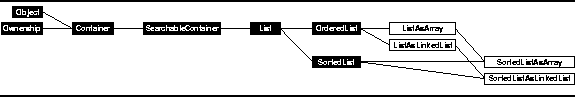
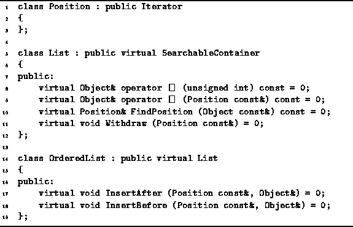

Data Structures and Algorithms
with Object-Oriented Design Patterns in C++
Data Structures and Algorithms
with Object-Oriented Design Patterns in C++

Figure: Object Class Hierarchy
The most basic of the searchable containers is an
ordered list .
In Chapter  we defined a searchable container as
a container which supports the following additional operations:
we defined a searchable container as
a container which supports the following additional operations:
An ordered list is a container which holds a sequence of objects. Each object has a unique position in the sequence. In addition to the basic repertoire of operations supported by all searchable containers, ordered lists provide the following operations:
Program declares two abstract classes--List and OrderedList.
The List class is derived from the SearchableContainer class
which is in turn derived from the Container class.
Consequently, the List class interface comprises
all of the member functions inherited from these base classes
plus four additional member functions,
FindPosition,
two versions of operator[] and Withdraw.
As befits the definition of an abstract class,
all of these functions are pure virtual member functions
of the List class.

Program: List and Ordered Class Definitions
The OrderedList class extends the List class by adding two more member functions--InsertAfter and InsertBefore. The two functions provided by the OrderedList class have been separated out from the List class interface because the List class is used as the base class from which other types of lists are derived.
Program also defines the abstract class Position.
The Position class abstracts
the notion of the position of an item in a list.
Since this is abstraction is almost identical to that of an iterator,
the Position class is derived from the Iterator abstract class.
No additional member functions are defined.
As we did in the previous chapter with stacks, deques and queues,
we will examine two ordered list implementations--an array-based one and a pointer-based one.
Section presents
an implementation based on the Array<T> class;
Section ,
a pointer-based implementation based on the LinkedList<T> class.
 Copyright © 1997 by Bruno R. Preiss, P.Eng. All rights reserved.
Copyright © 1997 by Bruno R. Preiss, P.Eng. All rights reserved.